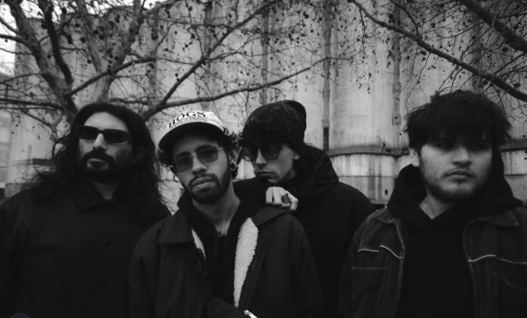

MOKA es una revista creada por y para artistas y amantes del arte en general.
Nació desde una necesidad que atraviesa a los artistas: la falta de inspiración a la hora de crear. Así que, dos amigas se unieron y elaboraron una idea que hoy se conoce como MOKA, que recopila obras de diversos artistas y sirve como materia prima para todos aquellos que desean adentrarse en el mundo del arte.
En MOKA vas a encontrar cuatro secciones por edición: Cine, literatura, música y fotografía. En cada sección, nos encargamos de profundizar, difundir y recomendar diferentes tipos de películas, cortos, libros, poemas, fotografías, curiosidades, quotes o citas inspiracionales.
Por cada edición, agregamos una playlist con canciones recomendadas y un qr en el que podes compartirnos tu música o de artistas independientes que quieras recomendar. También, cada edición trata de una temática nueva, por lo que cada edición es única e irrepetible.

Junio Insomne es una banda argentina de post punk emergente vigente desde el año 2023. Integrada por Ale Ludueña, Gustavo Ybañez, Joan Benito y Felipe Sequeira. Te invitamos a escuchar su album "Desde algún vacío" y visitar sus redes!
Explorar artistaInstagram: @revistamoka
TikTok: @revistamoka